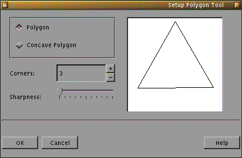
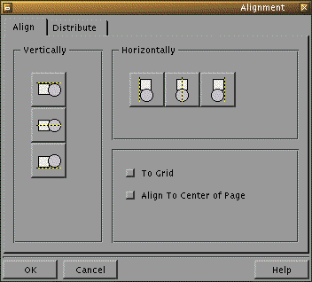
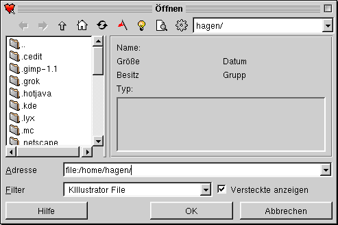
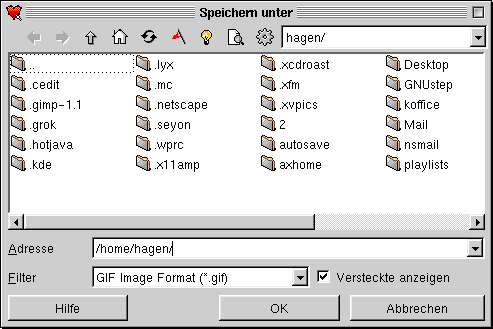
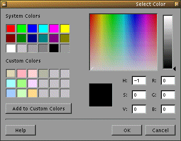

Next Previous Table of Contents
The operation of KIllustrator is intuitive and easy to learn. It is very similar to other graphical programs. KIllustrator uses key bindings which are KDE standards.
Additionally pressing the CTRL key while moving the mouse constrains the movement to one in one direction or in equal amounts in both directions. For example, pressing the CTRL key while drawing a rectangle, draws a square.
Some functions can, of course, be used on more than one selected item at a time.
The procedure to draw any 2D-Primitive, consists of the following steps:
The second step varies with each of the different 2D-Primitives. Therefore these are dealt with separately in the following where the operation is shown with the icon button to be pressed to select that function.
In order to draw a freehand line, one proceeds as follows:
With this tool lines, polylines, and polygons may be drawn.
To draw a line:
A polyline is a series of connected lines. In order to draw a polyline, proceed as follows:
To draw a polygon follow the steps in drawing polylines. To close the polygon hold down the SHIFT key while clicking the right mouse button to automatically close the polygon. A line from the last left-click to the first left click is automatically drawn .
Drawing Bezier curves is often a problem, however KIllustrator makes it easy. Proceed as follows:
In order to draw a rectangle:
This tool allows the simple drawing of equilateral triangles, squares, and higher order regular polygons. It is much simpler to use this tool for drawing regular polygons than the polyline tool. The procedure here is the following:

In order to draw an ellipse, proceed as follows:
* The bounding box of the ellipse is a rectangle which is just big enough to contain the ellipse - the edges of the rectangle are tangents (parallel to the x- and y-axes) of the ellipse.
This tool adds text to your KIllustrator drawing. The steps are are follows:
KIllustrator offers tools that allow the easy modification of drawn primitives, such as scaling, rotating, and shifting tools. This section describes how to perform these transformations.
Rotation here describes the rotation of an object about a centre point. Proceed as follows:
Scaling an object allows the user to increase or reduce the size of an object. To scale an object:
To shift an object proceed as follows:
In the previous sections the transformations of whole objects were presented. We now turn our attention to the manipulation of individual sections of objects. NOTE: Before the object can be modified the object must be selected using the selection tool.
For shifting individual points in a object:
This tool adds control points to an object. To add a point left-click on the object at the point where the new control point is desired.
With this tool one can delete control points from an object---simply left-click on the point to be deleted.
To fill an object with a colour select the object and left-click on the desired colour in the colour palette. If the required colour is not in the palette or a pattern fill is required, proceed as follows:
KIllustrator offers many ways to assist in the positioning of objects.
The grid is an aid allowing the user to work on a drawing precisely. Grid behaviour can be controlled by three functions (parentheses show the menu entries used to access the fuctions):
Helplines provide a further mechanism to the Grid when precise drawing is required. The advantage of using helplines is that the distance between individual helplines can be varied. The proceedure for Helpline use is identical to the Grid.
This function allows objects to be aligned with respect to each other and/or the page. For example a group of objects can be aligned such that their left edges are all in line or such that they are evenly distributed throughout the page. Select the objec t(s) to be Aligned and right-click, select "Align" from the menu and the following dialog appears:

NOTE: At the time of writing not all functionality of "Align" has been implemented. It is hoped that further functionality will be added soon.
If the path is already drawn, then one proceeds as follows:
The following Objects can be used as Paths:
Individual objects can be grouped together. This is useful of one wants to assemble complex drawings from individual objects and then treat these compound objects as one object. Objects are grouped as follows
Layers may be thought of as sheets of transparent paper with different pieces of the overall drawing on each. Together the layers form the overall drawing, but each layer may be edited independantly of the others. Layers are controlled via the Layers d ialog (View -> Layers...). Each layer has three characteristics represented by the eye, pen, and printer icons respectively:
There are two main ways to save a file, either via the "File" menu item, or by clicking on the Diskette icon in the list of icons. If you've just created the drawing you're working on, and haven't saved it yet, you will be taken taken to a dialog where you can choose a name. This will happen regardless of which of the two methods you choose.
If the file already has a name, it will be used unless you select the menu item "Save As".
You should ALWAYS use the file extension .kil. This is the only way to ensure that Killustrator doesn't run into problems when it tries to find the file again.
Just as in saving files, there are two ways to load them. You can click on the corresponding icon from the list, or you can use the "Open" item from the "File" menu. Either way brings you to the "Open" dialog.

Since this dialog form conforms to the KDE standard, we won't go into the workings of every button. If you've selected the file you want to open a preview appears on the right side of the dialog box. Now you can load it by double-clicking the file name , or by clicking on the "OK" button.
Regrettably, perhaps, one measure of a program's worth seems to be how many other programs' formats it supports. This does, however, afford a degree of flexibility to a piece of software; such import and export filters are necessary. Killustrator can i mport a number of file formats:
Importing objects into a Killustrator drawing doesn't work quite the same for all formats,
unfortunately. You will find most of the import filters in the "Edit" menu under "Insert".
The submenu item "Clipart" lets you insert .wmf files.The filters for
pixel-oriented images are under the submenu item "Bitmap". To import XFig drawings
or another Killustrator drawing, you have to use the "Import" item from the "File" menu.
Dialogs are similar to those for opening files.
Via the "File" menu and the item "Export" you reach the following Dialog:

This is very similar to the dialog for saving files. The only difference is the fact that you can choose what format to save the file in.
Previous operations in the drawing can be undone easily by using "Undo" from the "Edit" menu. If the undone step is then wanted again in the drawing this can be achieved by using "Redo". KIllustrator remembers all steps made to a drawing from when it w as started. One should consider, however, that Undo and Redo steps work on operations in the order in which they were performed on the drawing.
Zooming can be performed in two ways. The simplest is to use the drop down box in the main bar to select the required magnification level whose default value is 100%. The second method is to use the magnifying glass in the tool bar. Left-clicking on the canvas with the zoom tool increases the magnification to the next level. The magnification levels are:
The colour handling process in KIllustrator is very simple. Generally, a left-click on a colour in the colour palette changes the fill colour of the selected object(s); a right-click changes the outline colour (or the text colour) of the selected object( s). If the desired colour is not in the colour palette, then proceed as follows:

Default drawing parameters such as fill colour, line thickness and style can be set by changing parameters with no object selected. These parameters will be saved and used next time KIllustrator is started.
Next Previous Table of Contents